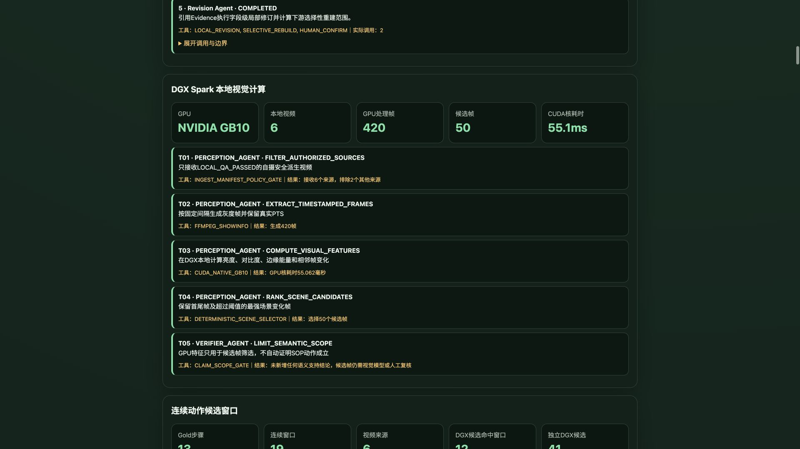
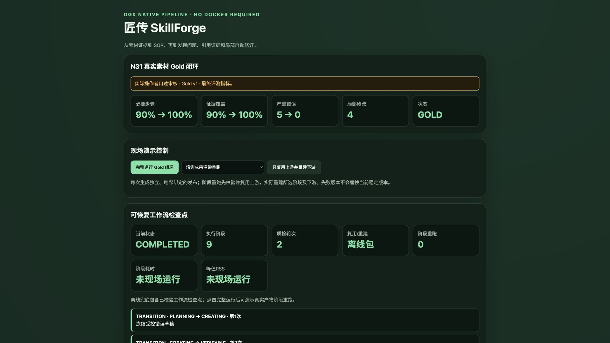
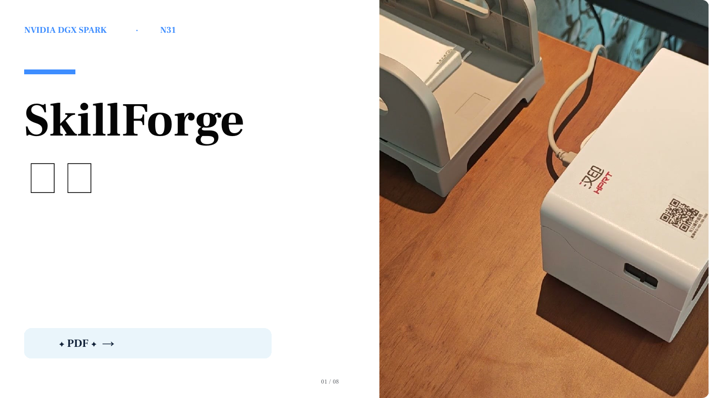

SkillForge 方法论系列 05/05 · 星星之火 · NVIDIA DGX SPARK 黑客松 2026
黑客松演示最经典的翻车方式：排练时好好的，上台跑一次，结果跟昨天不一样。
"AI输出有随机性嘛"——这句话在Demo阶段可以接受。评委笑笑，觉得你诚实。
但在真实培训场景里不行。新员工拿着你的检查清单操作设备，你不能告诉他"今天生成的步骤跟昨天可能不太一样，你自己判断哪版是对的"。工厂产线上，今天这批工人学的和明天那批工人学的必须是同一套标准。如果每次跑出来不一样，你就没法做质量追溯，没法做考核对比，没法证明"培训有效"。
Demo和产品的距离，不是功能多少的距离，是"第1次和第40次结果一不一样"的距离。
SkillForge 把可复现性当成跟功能正确性同等重要的工程指标来验证。不是嘴上说"结果稳定"，是真跑40次看是不是每次一样。
DGX Spark 上实测：
结果：全部成功，唯一 P0 语义指纹为 1 个。
"唯一语义指纹为1个"是什么意思？意思是：不管跑多少次，产出的SOP步骤、证据绑定、质检结论、修订记录——逐字段对比完全一致。不是"大概差不多"，是哈希值相同。
这个数值不包含原始视频、PDF或录音的预处理阶段（那是确定性的本地计算），也不代表整机GPU推理延迟。它验证的是：从结构化输入到最终培训包输出，整条链路是确定性的。
大模型有一个众所周知的特性：temperature > 0 时，同样的输入可能产生不同的输出。即使 temperature = 0，不同批次的推理也可能因为浮点精度、并行调度等因素产生微小差异。

DGX Spark本地处理：视频不出门，计算在本地对于聊天机器人，这不是问题——每次回答不一样反而显得"自然"。但对于培训内容生产，这是致命的：
任何一项不一致，都意味着你没法做前后对比、没法做质量追溯、没法向审核者证明"系统是稳定的"。
SkillForge 的解决方案不是"把temperature调到0然后祈祷"，而是在架构层面保证确定性：
模型参与的是语义理解和规划，但关键决策点（哪些步骤存在、证据怎么绑定、问题怎么分类）都由程序逻辑决定。这样即使模型的措辞有微小变化，结构化输出是稳定的。
答辩现场什么情况都可能遇到：网络断了、API挂了、设备没带、投屏分辨率不对。
SkillForge 准备了三层兜底：
现场重算（首选）： DGX本地跑完整闭环，实时展示"发现问题→举证→修订→复检"全过程。最震撼，评委能看到系统真的在"思考"。但依赖网络和Step Plan API。
预处理结果（技术问答时用）： 提前跑好结果，现场展示结构化数据和修订对比。不依赖外部API。适合回答"素材解析是否真实存在"这类问题。
无素材离线包（最终兜底）： 不含原始视频和手册，只展示脱敏后的结构化成果。断网、断API、断DGX都能讲完。极端情况下保证不翻车。
每种模式有固定入口、数据边界和期望结果。不管用哪种，评委看到的"5→0、4处修订、覆盖100%"都是一样的。三种模式的语义一致性有自动检查脚本验证，不是"我觉得差不多"。
最终培训包含：

三种演示模式：现场重算/预处理结果/无素材离线包每一项都有对应的结构化JSON和校验哈希。不是"文件夹里一堆文档你自己翻"，是"每个产出物都有唯一标识、来源绑定和完整性校验"。
做任何AI驱动的内容生产，在说"能用"之前，先跑N次看结果是否一致。

SkillForge（匠传）· 星星之火 · NVIDIA DGX SPARK 黑客松 2026判断标准：
具体操作：
可复现不是技术指标，是业务前提。你的培训对象、你的审核者、你的管理者，都需要相信"这个系统每次给出的答案是一样的"。
跑通一次叫Demo。跑通40次，才叫产品。
SkillForge（匠传）· 团队：星星之火 · NVIDIA DGX SPARK 黑客松 2026 代码：github.com/sparklefire/SkillForge 数据：github.com/sparklefire/SkillForge/blob/main/output/evaluation/runtime_benchmark_dgx.json 系列完。回顾：01证据先于结论 → 02多源交叉印证 → 03约束即自由 → 04只改病句 → 05第40次和第1次一样